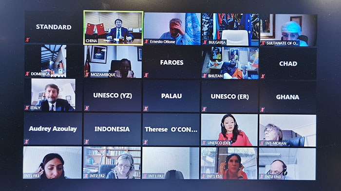
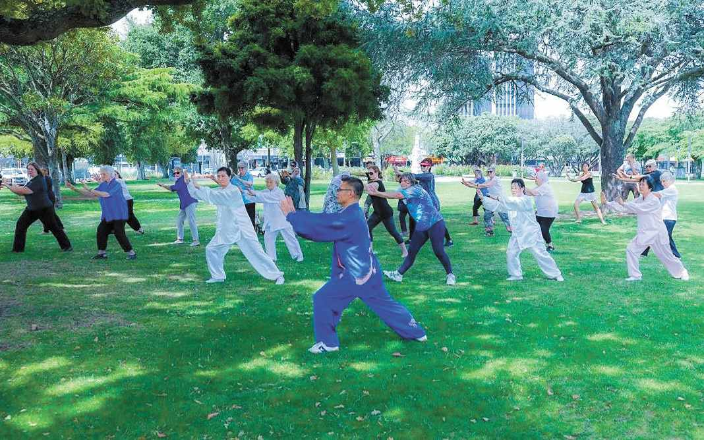
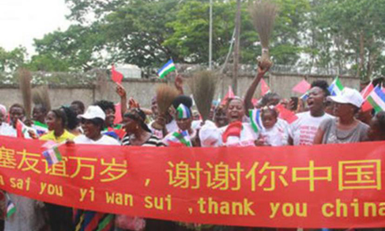
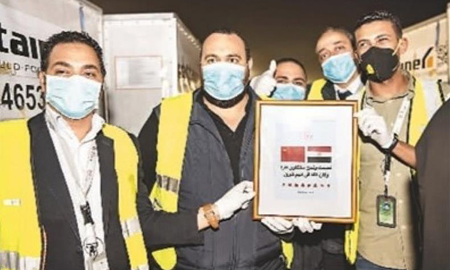
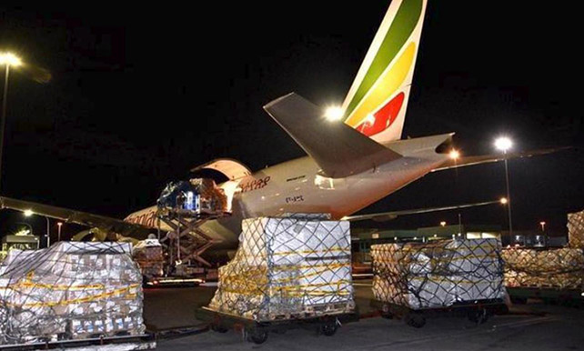
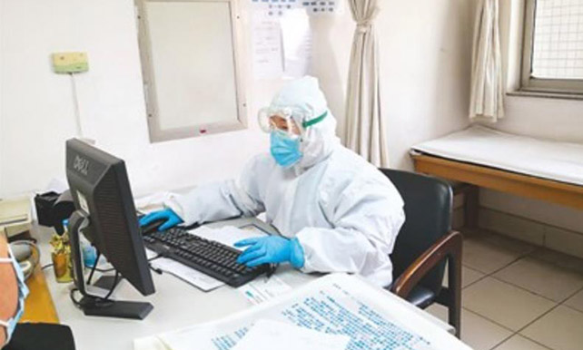

头条
刻下爱与希望 2020-04-26 经过全国人民的共同坚守和艰苦努力，我国疫情防控取得阶段性重要成效。但随着生产生活秩序的加快恢复，人员流 动和聚集增加带来的疫情反弹风险依然存在，特别是境外疫情仍在蔓延，输入性病例已成为我国新增病例的主体。牢 牢坚持外防输入、内防反弹，坚决做到疫情防控常态化，成为当前安全稳定复工复产的首要前提条件。
 联合国教科文组织召开首次文化部长网络会议 2020-04-25 4月22日，联合国教科文组织召开首次文化部长网络会议，邀请各成员国文化部长通过网络对话，讨论新冠肺炎疫情危 机对文化领域的影响，分享各国的应对政策及措施。此次会议是作为2019年11月19日教科文组织召开的文化部长论坛 的延伸，共有来自全球130余个国家的文化部长、副部长出席并发言。会议持续近8个小时。
书香中国 全民阅读 2020-04-23 4月23日是第二十五个世界读书日。在做好疫情防控的同时，各地书店、图书馆、农家书屋等文化场所有序开放，创新 线上线下服务。无处不在的阅读已融入人们的日常生活，全民阅读蔚然成风。
 海外中国文化中心：全球抗疫中的文化力量 2020-04-22 在疫情面前，世界各国是休戚与共的命运共同体，必须同心协力应对新冠肺炎疫情挑战。当前，中国疫情防控形势持 续向好，生产生活秩序加快恢复。在海外，位于多个国家的中国文化中心在做好自身防疫抗疫工作的同时，通过开展 文化交流活动，向驻在国介绍中国抗击疫情的情况，分享中国抗疫的成功经验和方法，生动展示中外间互帮互助的友 好情谊，表达中国人民与驻在国人民携手共同战胜疫情的决心。
 合作抗疫，中国用行动说话 2020-04-21 4月16日，《求是》杂志发表习近平总书记重要文章《团结合作是国际社会战胜疫情最有力武器》。文章指出，“战胜 关乎各国人民安危的疫病，团结合作是最有力的武器。”“在中方最困难的时候，国际社会许多成员给予中方真诚帮助 和支持，我们会始终铭记并珍视这份友谊。”
彰显珍视生命的人性之美——抗击疫情离不开命运共同体意识 2020-04-20 应对新冠肺炎疫情，需要凝聚人类共同的力量。中国的实践让世界看到，14亿中国人民同舟共济，众志成城，守望相 助，形成了联防联控、群防群控的强大力量，彰显了打赢疫情防控人民战争、总体战、阻击战的伟力。在这钢铁般意 志和力量的背后，绽放着中国人民珍视生命、护佑生命的人性之美。人民至上、生命至上，感天动地，温暖人心。
 中国支援多国抗疫 2020-04-17 ● 伊拉克 中国红十字会援助伊拉克防治新冠肺炎医疗专家组4月12日至14日走进巴格达多家定点收治医院，与伊方专 家交流临床诊治与防控方案。 ● 缅 甸 中国医疗专家组4月16日在内比都同缅甸卫生和体育部交流防疫工作。缅方表示将在全国推广中国专家组提供 的防疫抗疫建议。 ● 埃塞俄比亚 中国政府派遣的抗疫医疗专家组4月16日下午抵达埃塞俄比亚，将与当地医疗机构合作开展新冠疫情的防疫工作。
 “从中国抗疫斗争中学到宝贵经验” 2020-04-16 感谢中国雪中送炭，这些物资将极大支援南非抗疫一线的医护人员及其他后勤保障人员。”南非外交部部长娜莱迪·潘 多尔说，2014年非洲埃博拉疫情暴发后，中国率先驰援，彰显了真实亲诚对非政策理念和负责任大国担当。如今，中 国政府和人民一如既往地支援南非等非洲国家抗疫，还通过科技合作等向非洲提供支持，南非对此深表赞赏。中国驻 南非大使馆临时代办李南表示，当前，新冠肺炎疫情在非洲蔓延，中方感同身受。病毒没有国界，我们需要秉持人类 命运共同体理念，全面加强国际合作，共同应对。
 屏幕两端，架起战疫同心桥 2020-04-15 感谢中国雪中送炭，这些物资将极大支援南非抗疫一线的医护人员及其他后勤保障人员。”南非外交部部长娜莱迪·潘 多尔说，2014年非洲埃博拉疫情暴发后，中国率先驰援，彰显了真实亲诚对非政策理念和负责任大国担当。如今，中 国政府和人民一如既往地支援南非等非洲国家抗疫，还通过科技合作等向非洲提供支持，南非对此深表赞赏。中国驻 南非大使馆临时代办李南表示，当前，新冠肺炎疫情在非洲蔓延，中方感同身受。病毒没有国界，我们需要秉持人类 命运共同体理念，全面加强国际合作，共同应对。